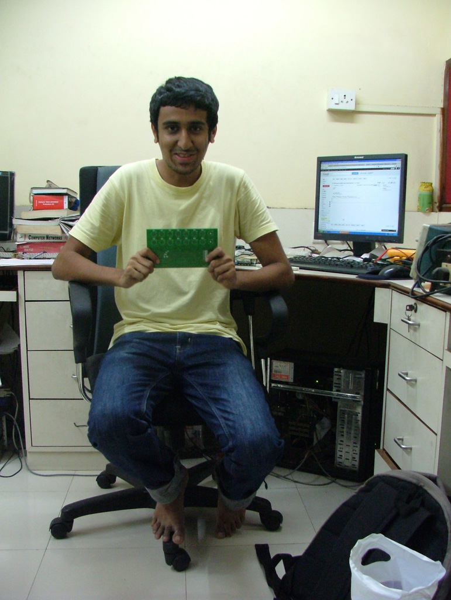

📼 You've found a time capsule: my homepage from ~2011, restored. The present-day me lives at
madhurjain.com.
Interactive Display - My Final Year Project
2008
This is my final year engineering project. A multi-touch table !
Sorry for the lengthy video and the average video quality.
More pics and details will be put up soon.
What's with the crappy looking design ?
~2011
I wanted to create something original, so i took the pen tablet I'd gifted to my dad and started scribbling with it, such a pathetic artist that i am, i ended up with this! Nevertheless, i thought i should put it up. So i went ahead creating a custom wordpress theme (yes the backend is wordpress) and here's what it looks like. It might not render properly and lot of elements on the website might break, but hang on, i am still working on it..
2026 update: it is no longer WordPress. Still working on it.
DIY Direct To Garment Printer
~2010
7 days, 3 printers and lots of woodwork !
This is the DIY Direct to Garment printer i built along with my dad last year.
Will put up the detailed pics soon.
Illuminate - My entry for the 555 contest
Mar 2011
I had these wall hangings at my home, which had a transparent window at the center. I wanted to lit up these hangings with some back-light. I had been closely following the discussion on twitter, between Jeri and Chris and the 555 contest was announced ! I started thinking of a project to work on and then i remembered these wall hangings. I thought, why not make it interactive, instead of just having a static back-light, I'd make the light pulse as someone passes by the staircase. And this is exactly what i did!
UPDATE : I won a door prize for my entry :D. A cute little PIC Development board from droids.it.
The eNTesla Experience
unpublished draft · Dec 2013
After working on FreeMyCall.com for around 8 months and realizing the business model in itself was flawed, we gradually moved on. Then came again the what next? part. Amidst of this, I met Neeraj and my college mate Yash. They had started with an embedded systems start-up a year back. Being an electronics engineer I always wanted some hands-on industry experience in electronics. So, I wrote them an email showing my interest to work with eNTesla. They gladly accepted the offer. Soon, I was at Mumbai, working with them!
Initially, I dabbled around with various things, partly hardware, mostly still software trying to get a hang of things. Gradually, I started designing small schematics / layouts using Eagle. I wrote a couple of software utilities to communicate with the hardware over RS232, Ethernet. Eventually, I was put on a real embedded systems project which involved building a medical diagnostics instrument called Audiometer from scratch. I spent next 8 months building the it. Work was pretty exciting, at times daunting, troubleshooting the issues with background noise and other hardware bugs. It involved everything from designing the schematic, layout, soldering the components on the test PCB, writing the firmware and the communication software utility.

As much I enjoyed working at eNTesla and learning new things, there was no life apart from it. Food problems, busy streets and pollution dawned on me and I finally decided to move back to my hometown. I still remember the advice Neeraj gave me - Do what you are good at, not what you like to do.
Electronics is what I liked doing, but wasn't really good at. Hardware is very exciting since the things you build are tangible. But, I must admit, hardware development is hard.
Infosys - The Golden Fence
unpublished draft · Dec 2013
The Good Part
- Great infrastructure and facilities.
-
The Not So Good Part
Not so good management.
A Mad Jack
unpublished draft · Feb 6, 2013
A few mistakes I made so far since I started with MadJack :)
- Didn't ask for any advance amount because I had just started up
- Didn't ask for any advance amount because it was a neighbor
- Quoted too less of a amount, did a ton of work in exchange, because didn't want to disappoint asking for money for every small thing
- Wasted time on things not in scope of MadJack (Buying 10 copies of AntiVirus just because a friend told, etc)